Sheetrock hanging
Professional drywall hanging for homes, additions, garages, and commercial interior build-outs.
- New construction and remodels
- Ceilings, vaulted and flat
- Garages, shops, and additions
Pulliam Sheetrock Service hangs, finishes, and repairs drywall for homeowners, builders, and property managers in Corinth, Oxford, Tupelo, Ripley, and the surrounding counties — with straight walls, tight corners, and a paint-ready finish.
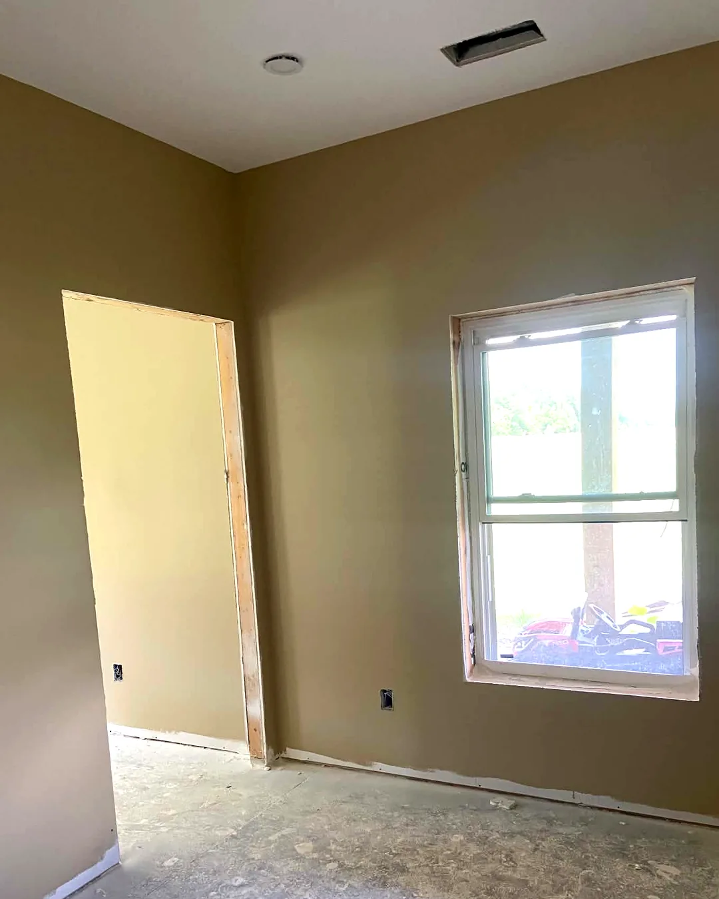
Core services
Whether you need a complete sheetrock installation on a new build or a precise drywall repair in an existing room, Pulliam Sheetrock Service keeps the job moving with clean execution and a professional finish.
Professional drywall hanging for homes, additions, garages, and commercial interior build-outs.
Taping, mudding, sanding, and corner detail that leaves walls and ceilings ready for paint.
Cracks, holes, water damage, and remodel tie-ins repaired to blend into the surrounding surface.
Work examples
From open residential interiors to large commercial ceilings and detailed finishing work, here is the range of sheetrock projects we handle across North Mississippi.
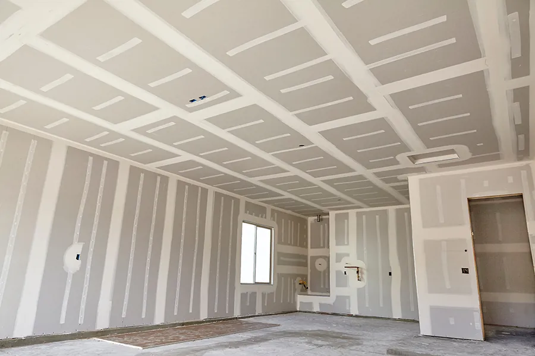
Open rooms, remodels, additions, garages, and new-construction sheetrock installation.
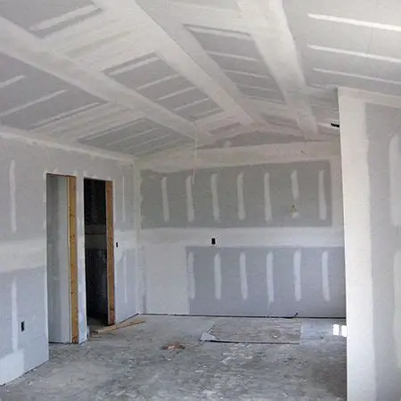
Large ceilings, clean wall runs, and dependable finishing that keeps contractor schedules on track.
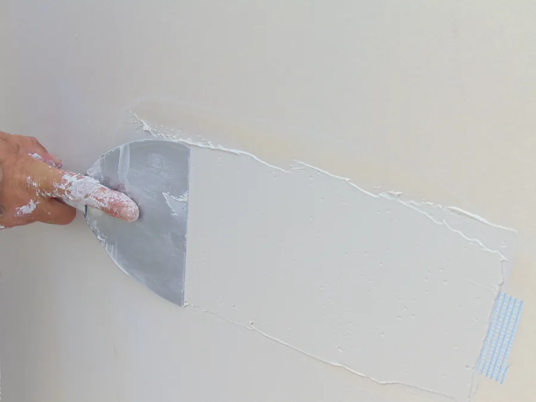
Precision corner work, seam finishing, patching, and touch-ups that need a clean final look.
Recent work
Hung, finished, and painted by Pulliam Sheetrock Service. Select any photo to view it larger.
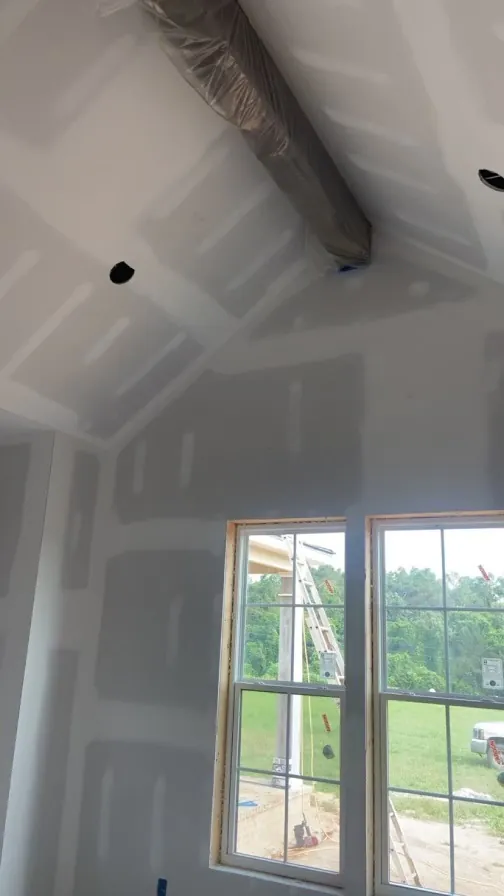
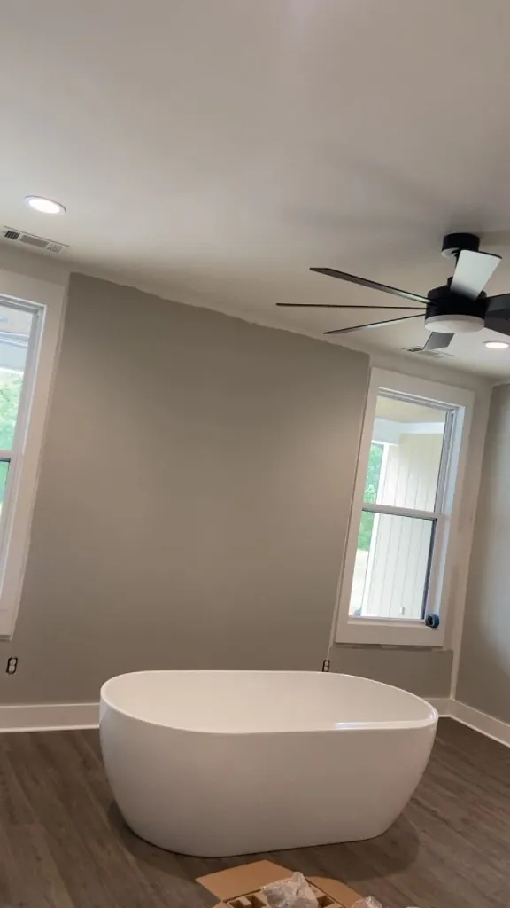
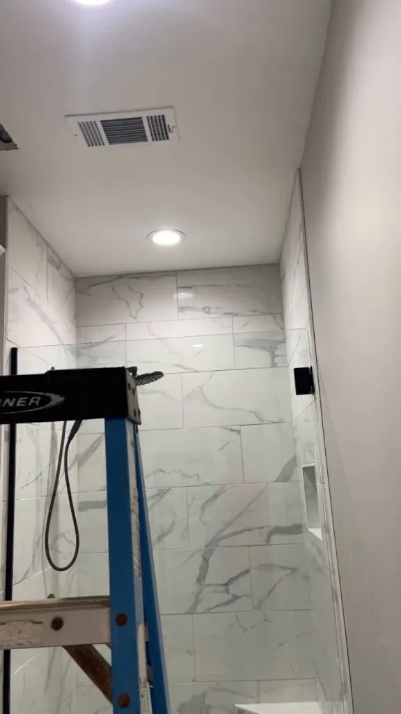
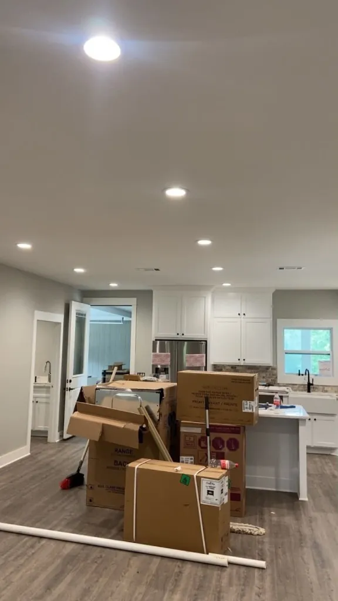
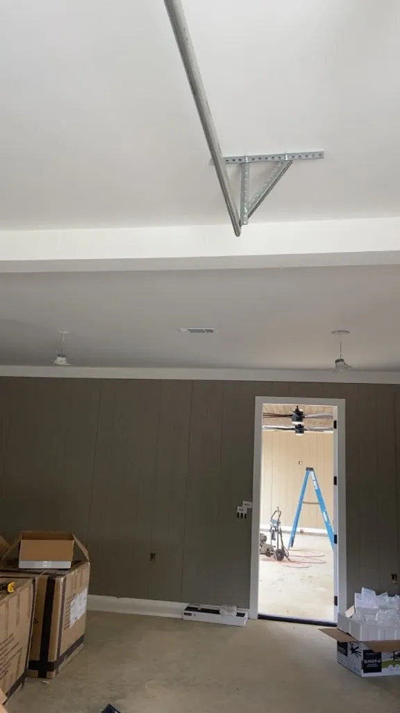
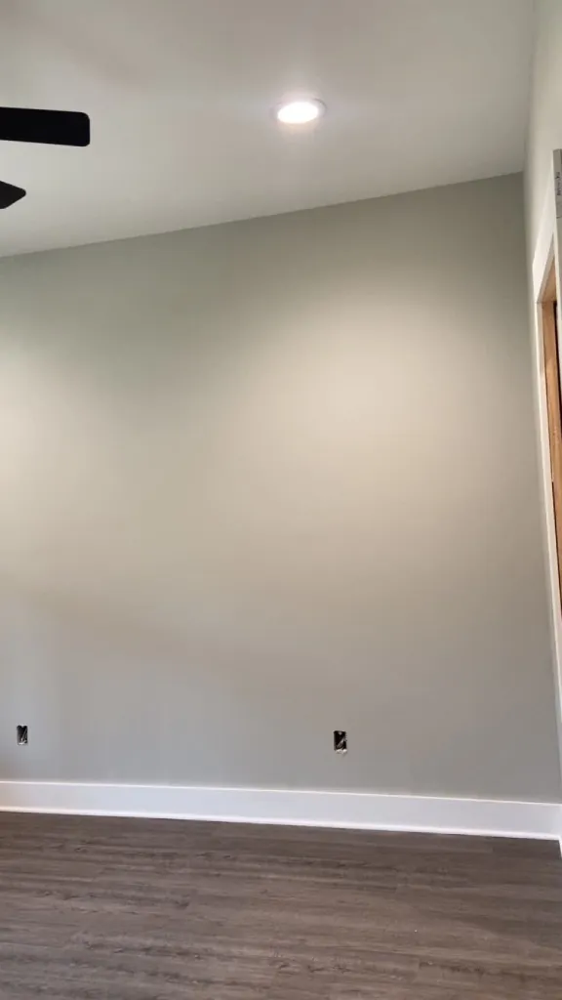
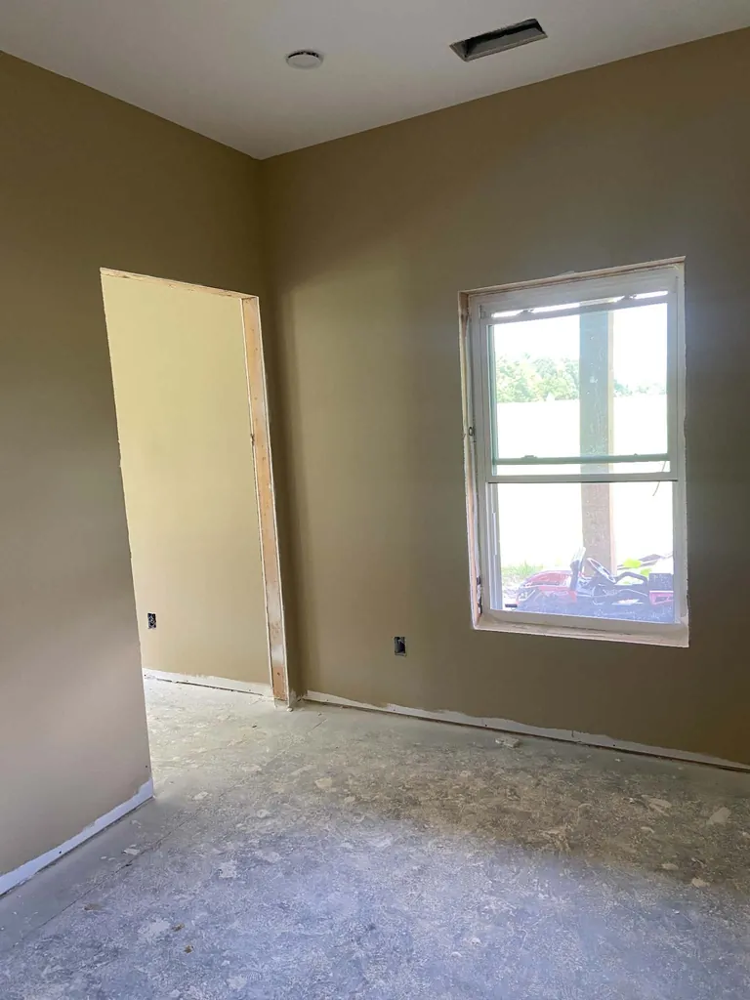
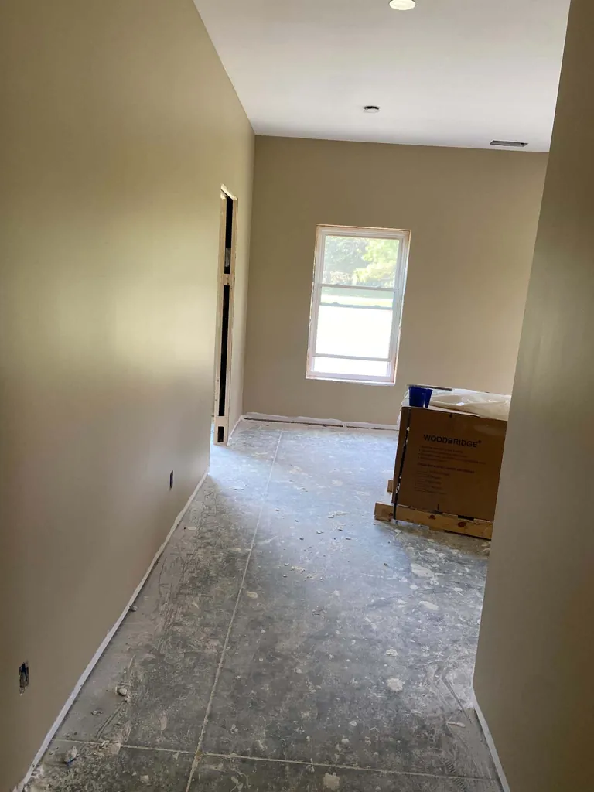
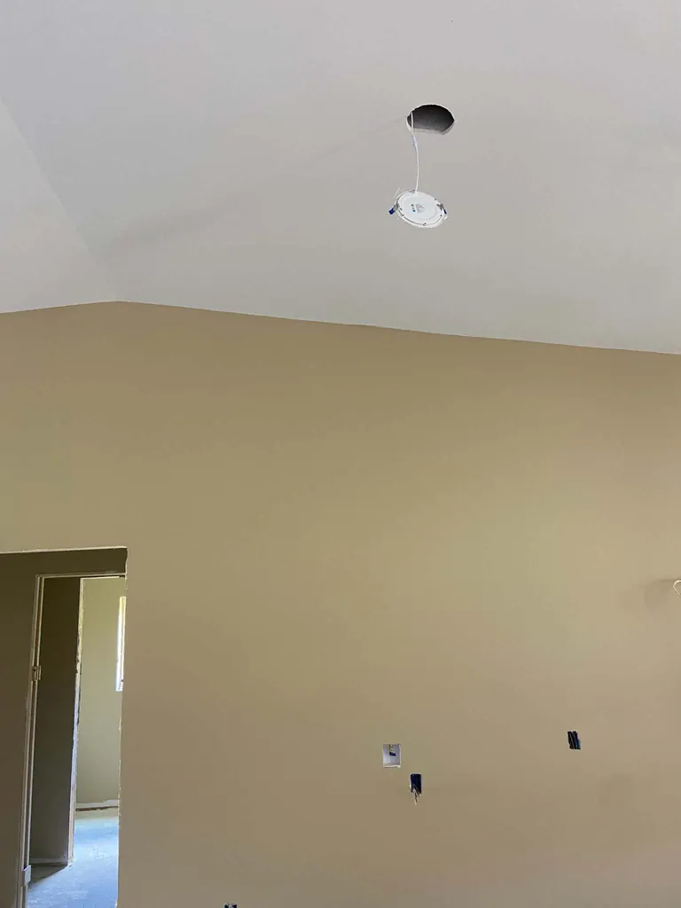
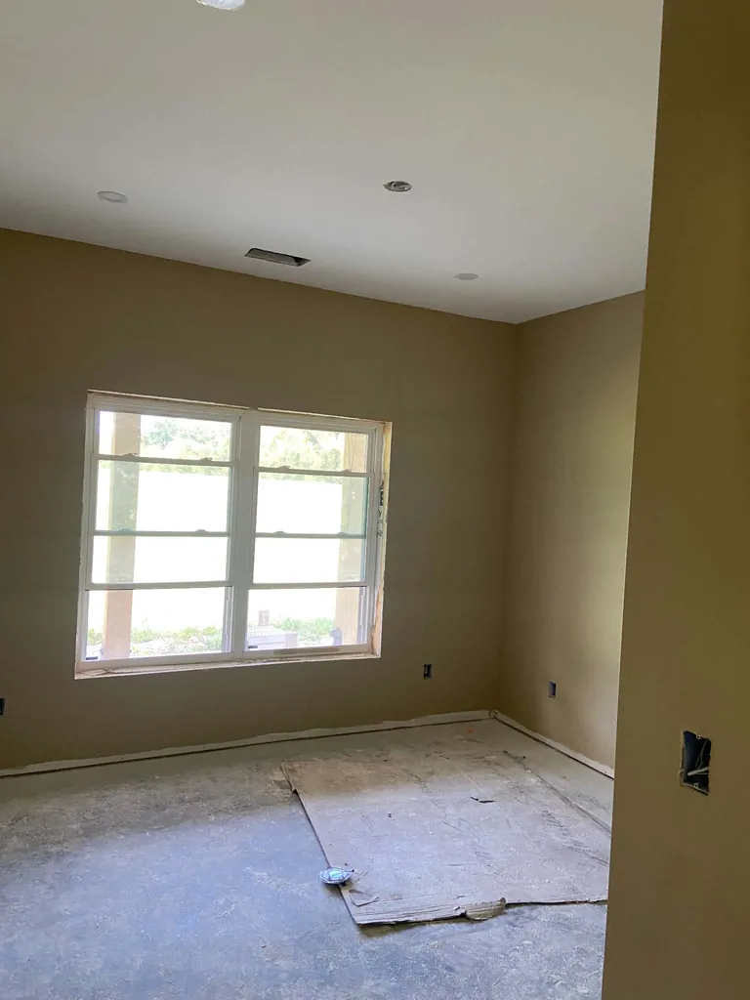
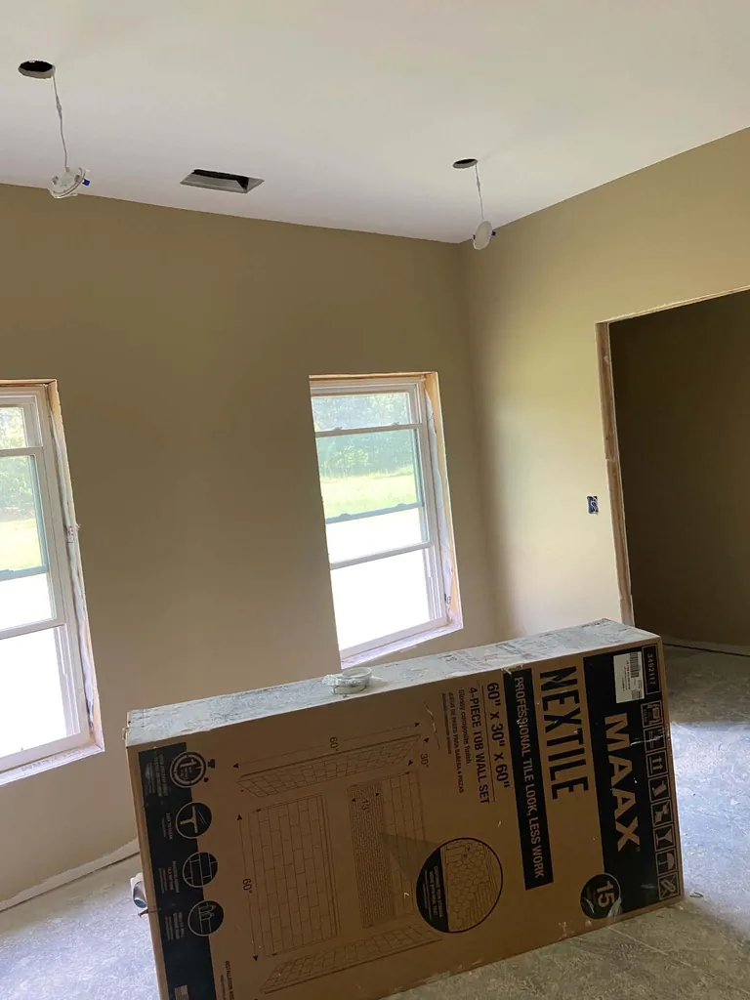
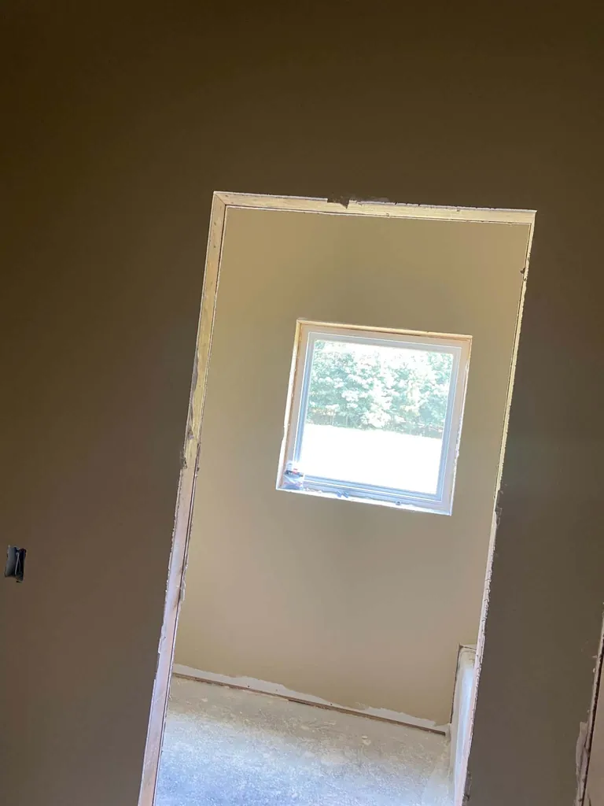
Service area
Pulliam Sheetrock Service covers Tippah, Alcorn, Benton, Prentiss, Lafayette, Union, Lee, and DeSoto counties, plus the Pickwick area of Southwest Tennessee. Pick your town below for details on the work we do there.
If your job is anywhere in North Mississippi or just across the Tennessee line, it is worth a call. Travel outside the listed towns is common, especially for larger builds and multi-room jobs.
Also serving Ashland, Walnut, Blue Mountain, Falkner, Baldwyn, Guntown, Saltillo, Holly Springs, Iuka, and surrounding communities.
Why builders and homeowners call
Sheetrock is the last thing anyone sees before paint — and the first thing they notice if it is done poorly. Every job gets the same attention: square corners, flat seams, and a surface that does not need fixing later.
Frequently asked questions
Sheetrock hanging, finishing, and repairs for residential and commercial spaces — from single-room patches to full new-construction interiors.
Yes. No job is too large or too small. Small drywall repairs and finishing corrections are handled right alongside full installs.
Yes. We work throughout Corinth and Alcorn County, Oxford and Lafayette County, and the surrounding North Mississippi area including Ripley, Tupelo, New Albany, Booneville, and Southaven.
Tippah, Alcorn, Benton, Prentiss, Lafayette, Union, Lee, and DeSoto counties in Mississippi, plus the Pickwick area of Southwest Tennessee.
Pricing depends on square footage, ceiling height, the level of finish, and how much prep or repair the job needs. Estimates are free — call 901-651-0234 with the details of your project.
Call Manse Pulliam at 901-651-0234 or email pulliamsheetrock@gmail.com with your location, room count, and timeline.
Reviews
Reviews are how most people in North Mississippi find a sheetrock crew they can trust. If we have done work for you, a quick rating on Google genuinely helps.
Ready to talk about your job?
If you need sheetrock hanging, finishing, or repair anywhere in North Mississippi, call or email with the details and we will get you a number.